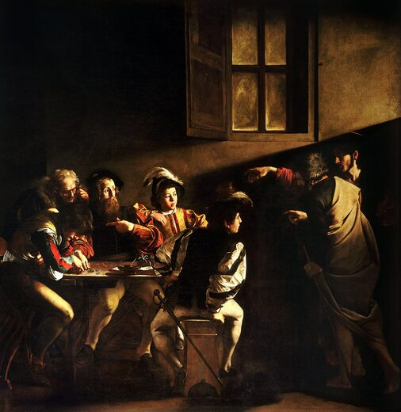
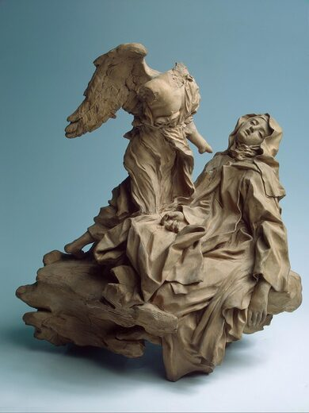
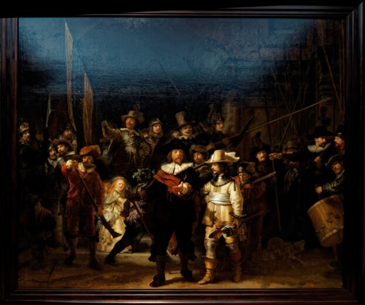
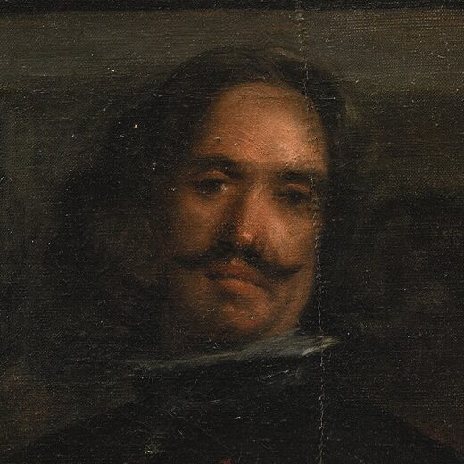

A Vocação de São Mateus
O chiaroscuro caravaggesco transforma a cena bíblica em drama iluminado por raio divino.
Sala IV
O Espírito Barroco
Chiaroscuro, drama espiritual e a cena como espetáculo.

O chiaroscuro caravaggesco transforma a cena bíblica em drama iluminado por raio divino.

Bernini funde escultura, arquitetura e luz em teatro espiritual, barroco como experiência total.

Rembrandt barroquiza o retrato coletivo com luz dinâmica e movimento burguês.

Velázquez desafia o olhar ao fundir retrato, cena de corte e metapintura.
Próxima sala